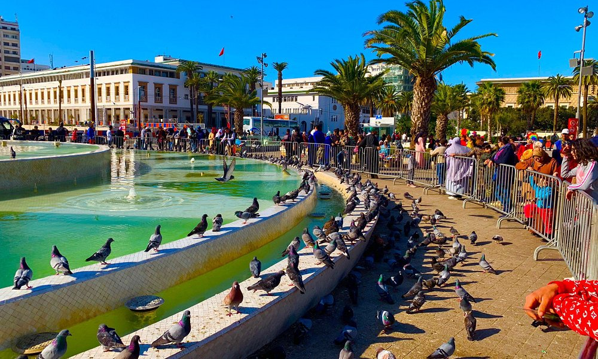
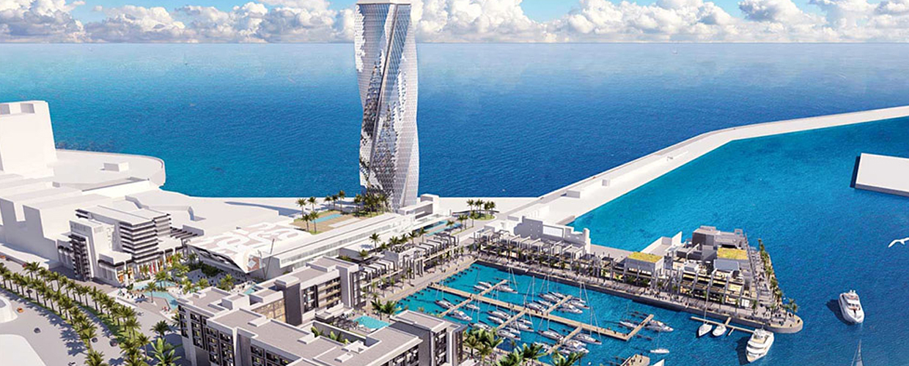
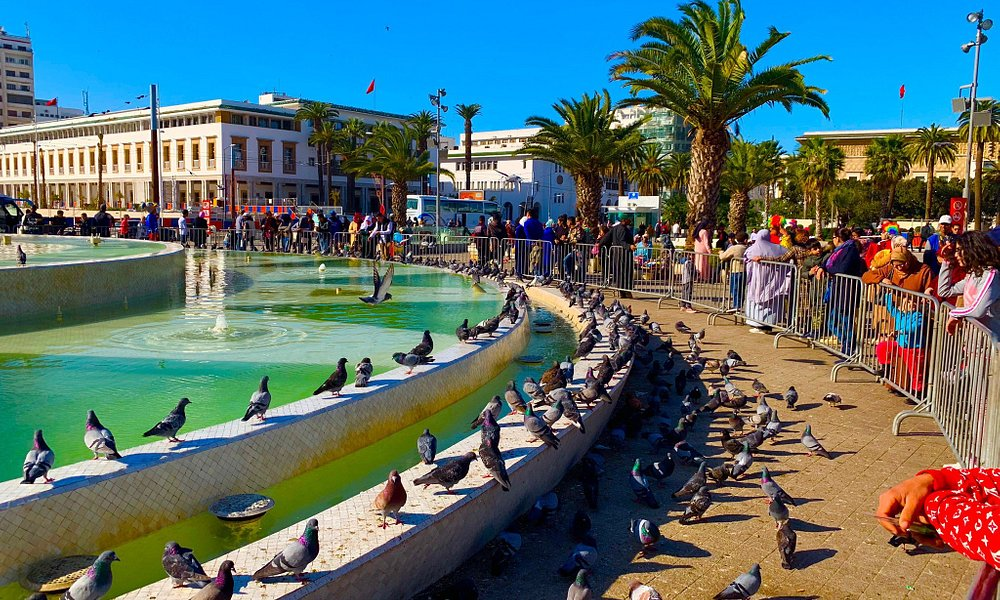
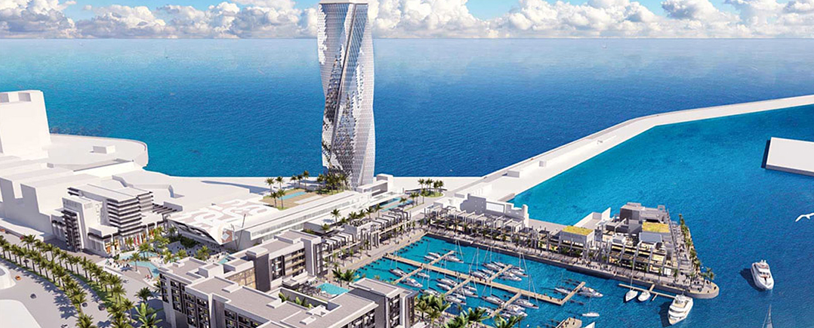
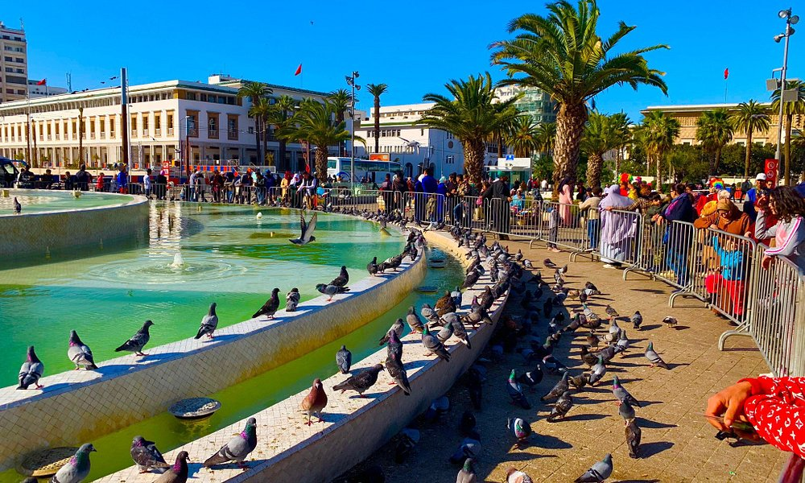
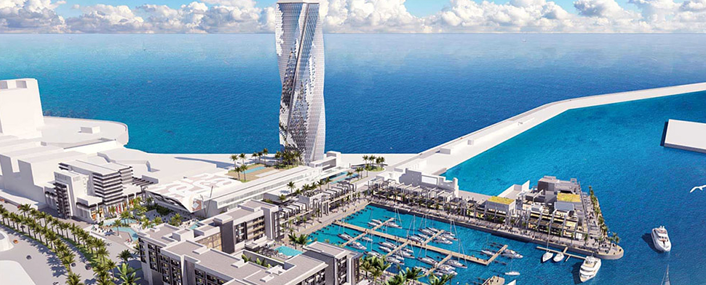

Maroc tourisme
Le memorial du Maroc
Mémorial de guerre de Vietnam avec des guirlandes au lever de soleil, Washington, C.C, Etats-Unis Mémorial de guerre de Vietnam avec Washington Monument dans la distance, Washington, C.C, Etats-Unis Le mémorial de guerre de vétérans du Vietnam est le mémorial le plus abstrait sur le mail national Il est également, à beaucoup, au plus profond et émotif Les deux murs noirs submergés de granit, consacrés en 1982, sont inscrits avec les noms des 58.000 membres de service américain plus qui sont morts dans la guerre de Vietnam Le concepteur Maya Lin a appelé sa conception controversée un “anti-monument »
Visitons le palais royal du Maroc
Le roi du Maroc a prononcé un discours dans la soirée de ce samedi 29 juillet, un discours-bilan de ses 18 ans de règne dans lequel il a brossé un tableau en demi-teinte. Le Royaume a certes enregistré des progrès économiques et consolidé ses acquis démocratiques, mais les fruits de ce dynamisme peinent à induire les effets sociaux attendus. Un passif dont le souverain a particulièrement attribué la paternité à la classe politique, mais aussi à une administration publique en retard face au dynamisme dont fait preuve le secteur privé et qu’illustre la situation qui prévaut ces derniers mois à Al Hoceima dans le Rif.
La splendeur plage du Maroc
Casablanca l'effervescenteDes artères bordées par des palmiers, de grands immeubles d'affaires et l'Atlantique qui ouvre sur le monde : Casablanca est le poumon économique du Maroc, une métropole bouillonnante sans cesse en éveil. Les infrastructures modernes se mêlent aux quartiers de charme, entre héritage arabo-musulman et legs de la période coloniale. Découvrez-en toutes les nuances : promenez-vous dans la médina, l'une des plus tardives du Maroc, traversez le centre et ses immeubles art-déco, rejoignez la mosquée Hassan II, merveille de l'architecture construite sur l'eau. Laissez-vous emporter par le côté festif de la ville. Profitez de la corniche, de ses clubs, des festivals aussi : le Festival de Casablanca, Jazzablanca ou encore Tremplin L'Boulevard. Quant au littoral, il est bordé de plages aménagées pour votre confort. Sur place, plongée, jet-ski ou plaisance sont autant d'activités qui agrémentent votre séjour. À Casablanca, on ne s'ennuie pas ! Entre culture et détente, la cite blanche ne manque décidément pas d'attraits.


Venez visiter le Maroc